Brillo, amplitud y luz en todo el departamento
El estudio intervino la totalidad del departamento en una obra express: refuncionalizó el área de servicio, el lavadero, la cocina y el comedor diario, y diseñó a nuevo la suite principal y el living comedor.
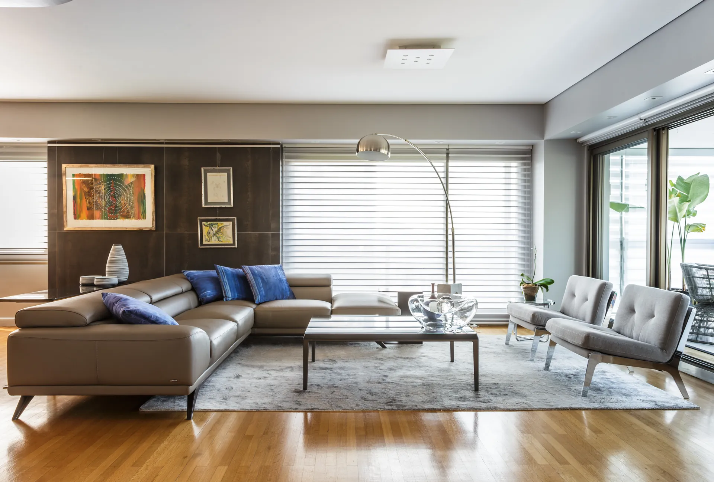
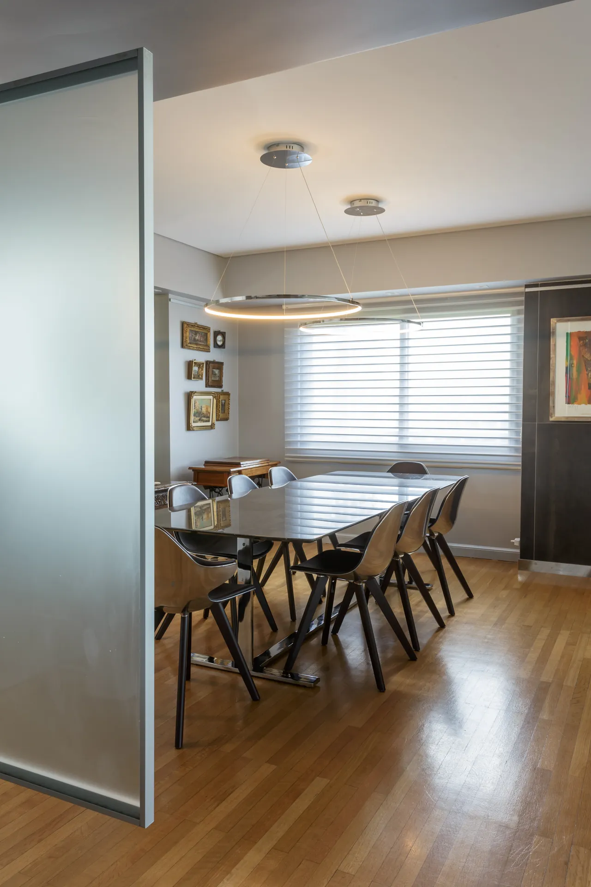
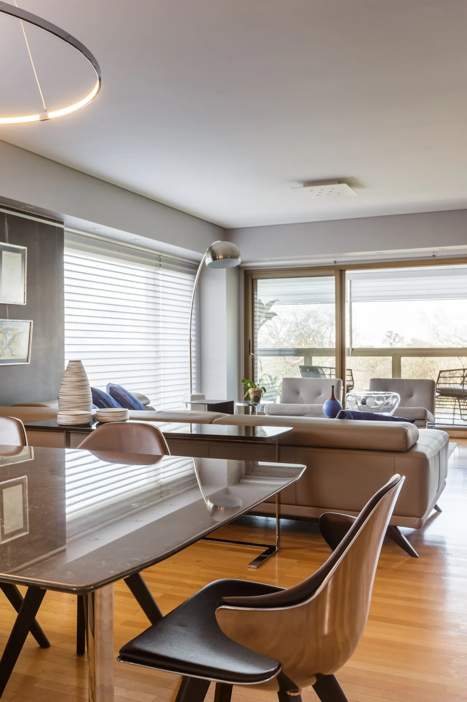
Diseñado a nuevo
Los materiales elegidos fueron superficies brillantes y pulidas, para enfatizar las sensaciones de amplitud, pulcritud y luminosidad que buscaban los dueños de casa.
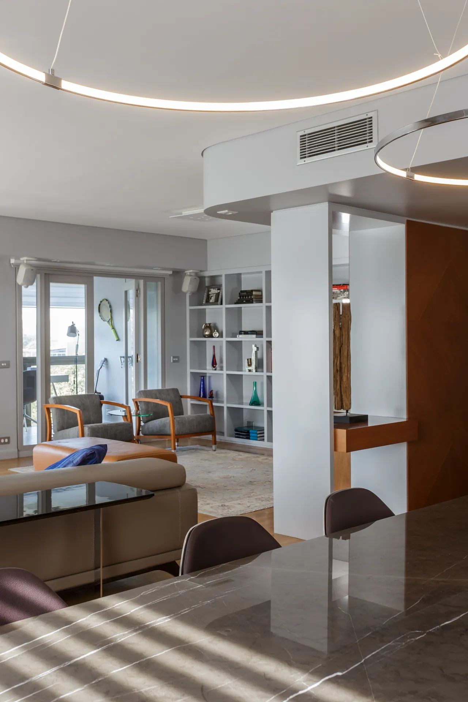
Desde cero
Se realizó la demolición completa y la refuncionalización de los espacios, con nuevas instalaciones y mampostería, diseño de cielorrasos e iluminación y un diseño muy detallado de todo el equipamiento fijo, que duplicó el espacio de guardado previo.
También se cambió todo el sistema de aire acondicionado central, reemplazándolo por un equipo central con comando individual para cada ambiente.
Muebles propios
En la suite, el living y el comedor principal se diseñaron muebles a medida: bibliotecas, un mueble de guardado con frente de madera y un módulo para la televisión y el audio.
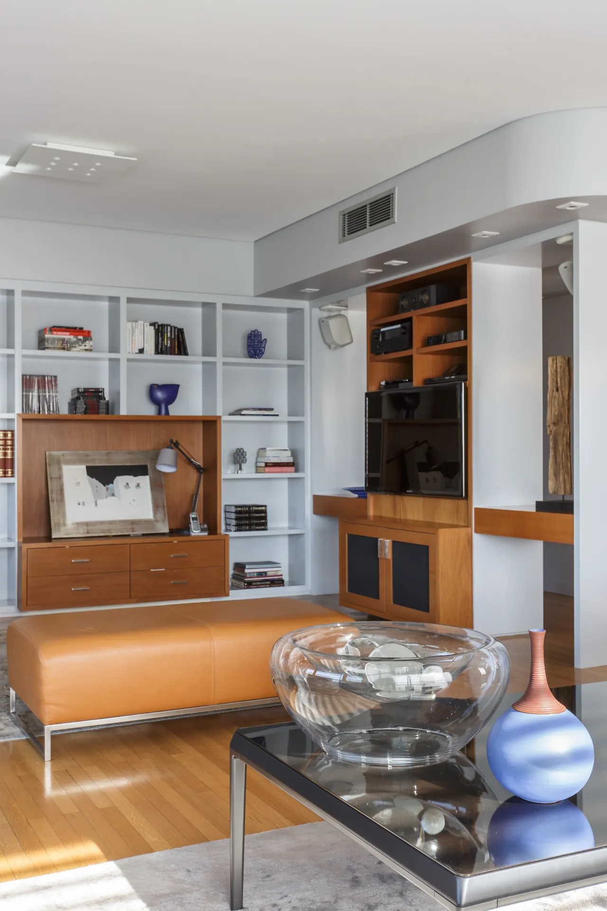
Superficies brillantes y pulidas para enfatizar la amplitud, la pulcritud y la luminosidad
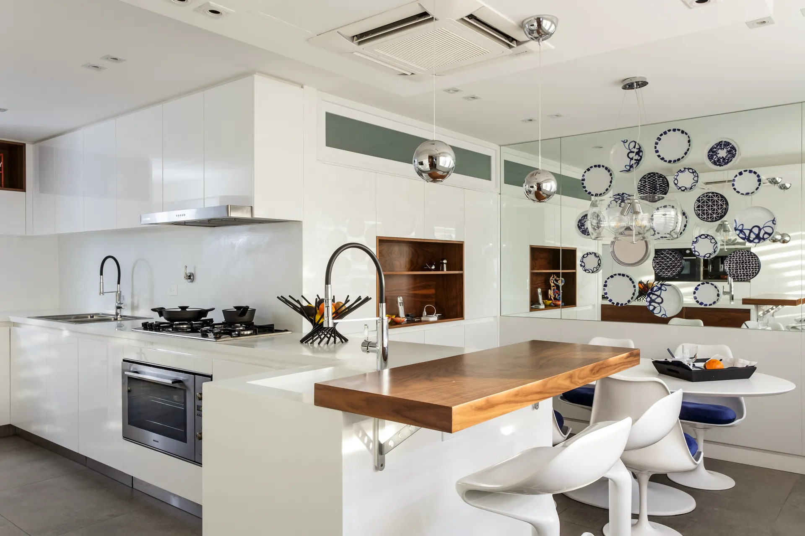
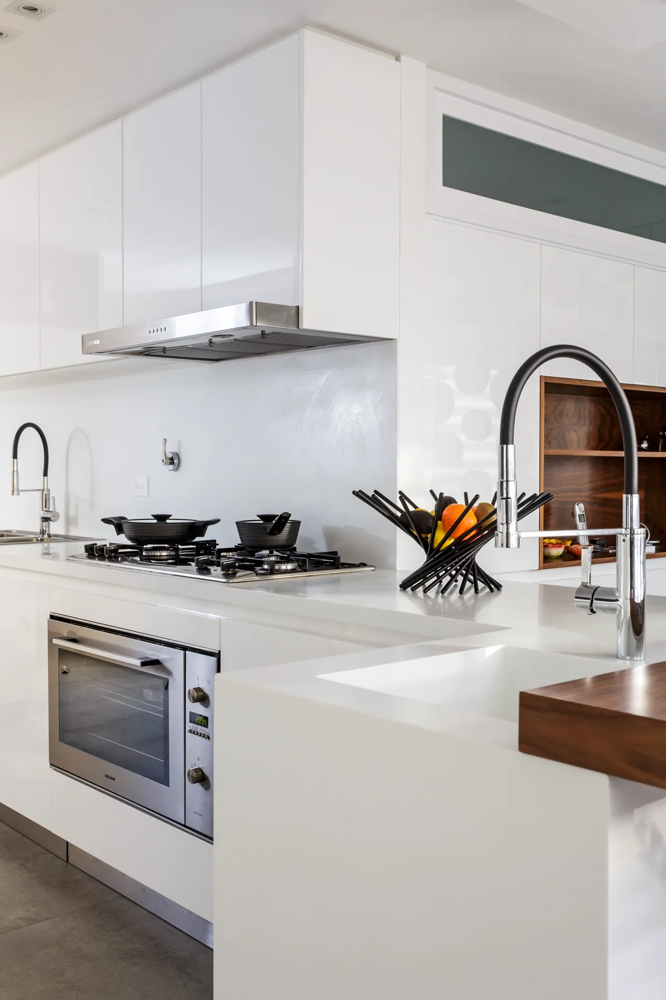
Brillo y opacidad
Muebles de madera con terminación en laca brillante, mesadas de Silestone blanco pulido, electrodomésticos empotrados de última generación e iluminación de leds. Un piso símil concreto crea un juego de contrastes entre el brillo y la opacidad.
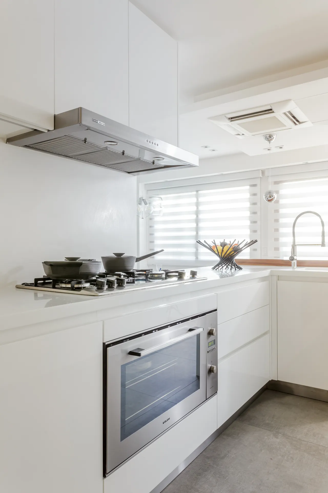
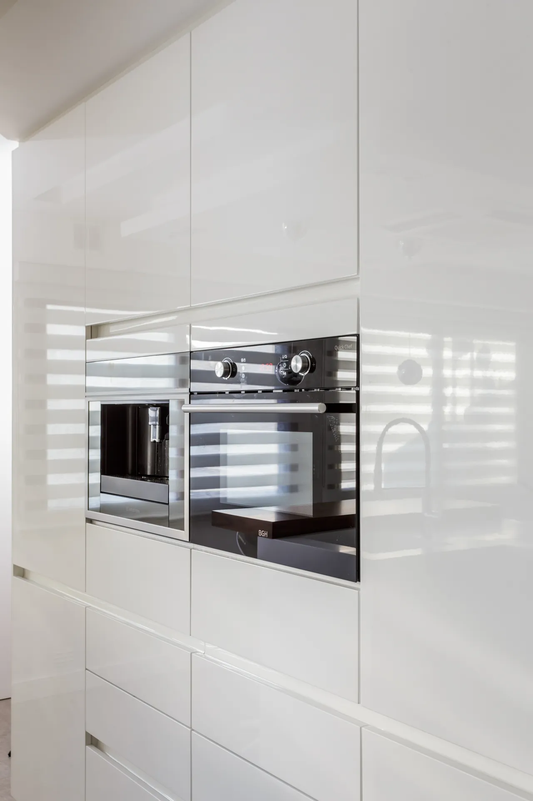
El doble de espacio
Todo el equipamiento fijo fue diseñado al detalle: frentes lisos de laca brillante que esconden el guardado y alojan los electrodomésticos empotrados.
Un gran espejo
Un gran espejo duplica visualmente el espacio del comedor diario.
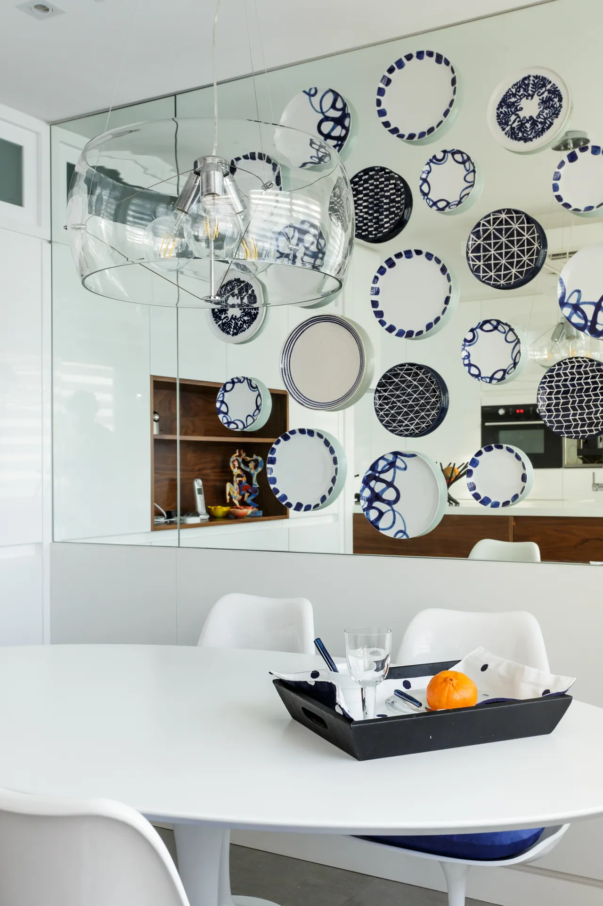
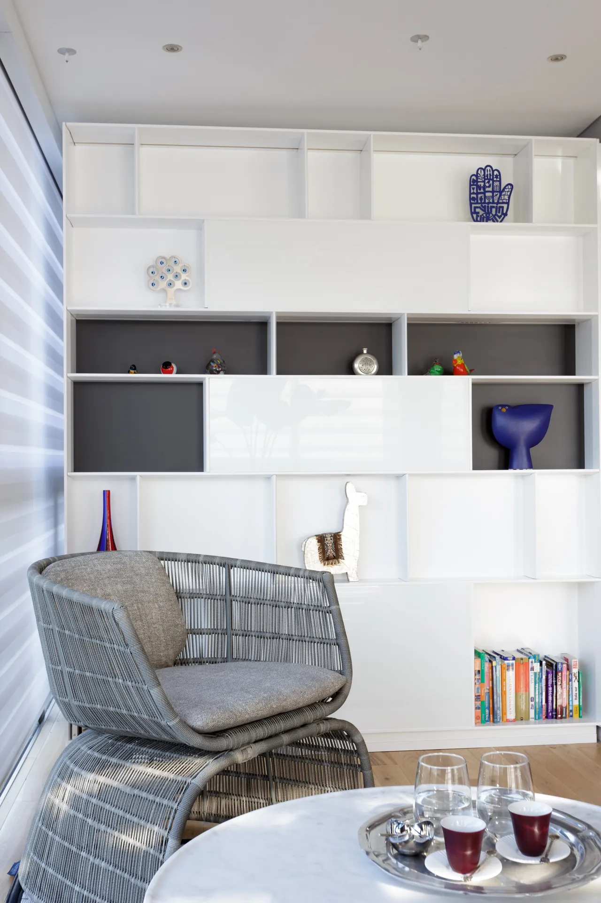
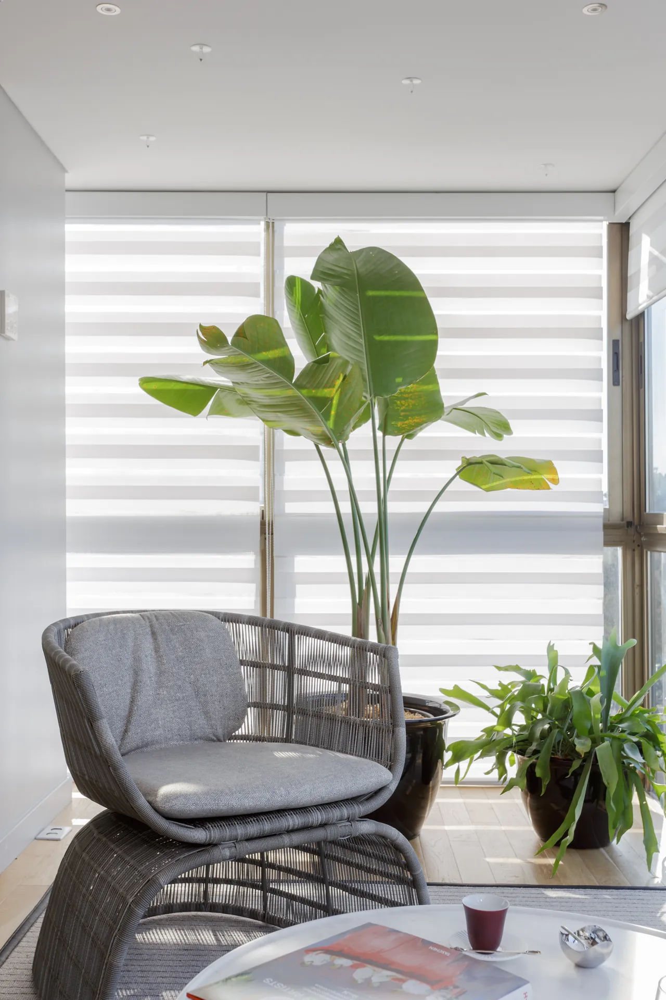
Un living exterior
El balcón se dividió en escritorio y galería cubierta, a modo de living exterior, con un mueble biblioteca de doble cara.
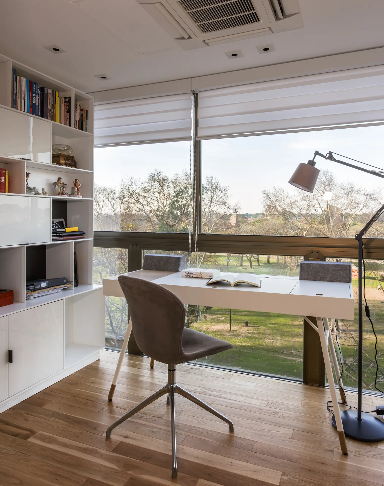
Frente a los árboles
En el otro sector del balcón, el escritorio aprovecha el ventanal y la vista a los árboles.
Luz y materia
Esta obra es una reforma completa con diseño de interiores y equipamiento: el estudio redistribuye los espacios, renueva instalaciones, cielorrasos e iluminación, y diseña a medida cada mueble fijo.
Conocer los servicios
Otros proyectos
Ver todos los proyectos

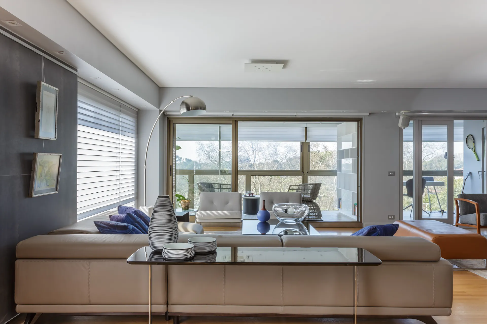
Todo empieza con una conversación
El estudio diseña viviendas completas en Argentina, España y Estados Unidos.